Master thesis defense
A Multi-Objective Scheduling Framework for Energy-Performance Optimization in Multi-GPU Task Graphs
Runtime-level scheduling for CUDASTF task graphs: HEFT-relative locality-aware placement followed by guarded window-level DVFS control.
Examiner: Miquel Pericas
Chapter 1 - Thesis claim
Use task-graph information to make scheduling both locality-aware and energy-aware, without abandoning a strong HEFT baseline.
Performance anchor
HEFT remains the safe earliest-finish-time fallback for every ready task.
Locality certificate
Non-HEFT placement is accepted only when copy savings justify the bounded delay.
Guarded energy control
DVFS decisions are committed by per-GPU windows, not by isolated kernels.
The thesis starts from a practical tension: multi-GPU runtimes need performance, but energy and data movement cannot be treated as afterthoughts.
Chapter 1 - Placement problem
A locally good HEFT decision can create downstream copies.
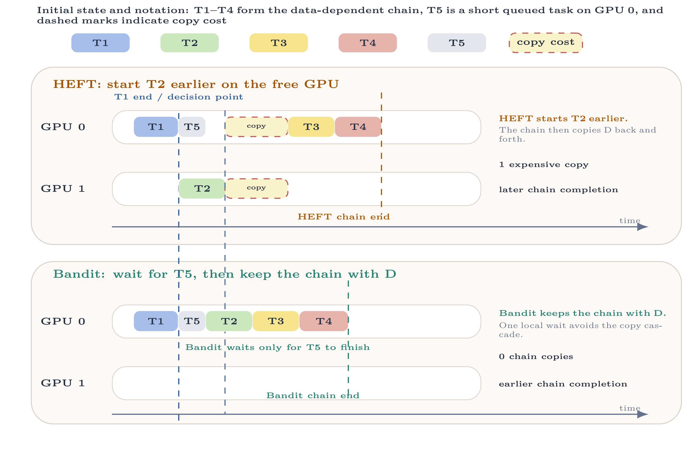
HEFT optimizes the current task
T2 starts earlier on the free GPU because that GPU has the earliest local finish time.
The graph pays later
Successor tasks then pull the produced data back across GPUs, creating extra copy cost.
Scheduling implication
The runtime needs a bounded way to trade a small local wait for better future locality.
Chapter 1 - DVFS problem
Per-task DVFS is also local: frequency changes are device-level and can overlap.
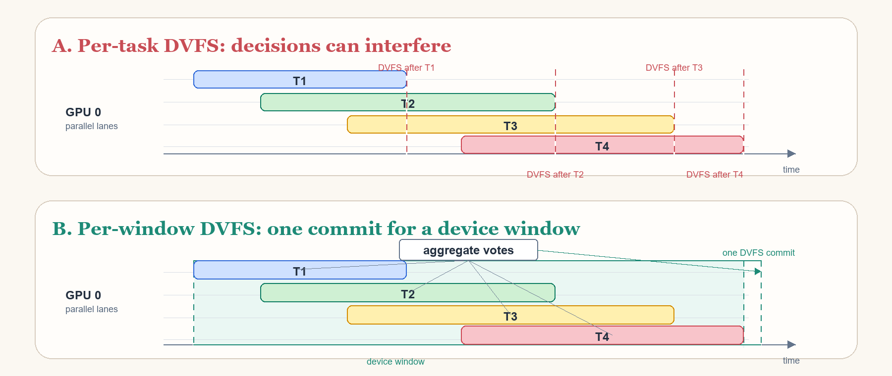
Local requests interfere
A task-local frequency request persists over time and can affect other tasks on the same GPU.
Windows are more stable
Aggregating task intent first gives one device-level decision for a later execution window.
Same lesson
Both placement and DVFS need task-graph context rather than isolated per-task choices.
Chapter 3 - System overview
Two runtime layers keep the action space explainable.
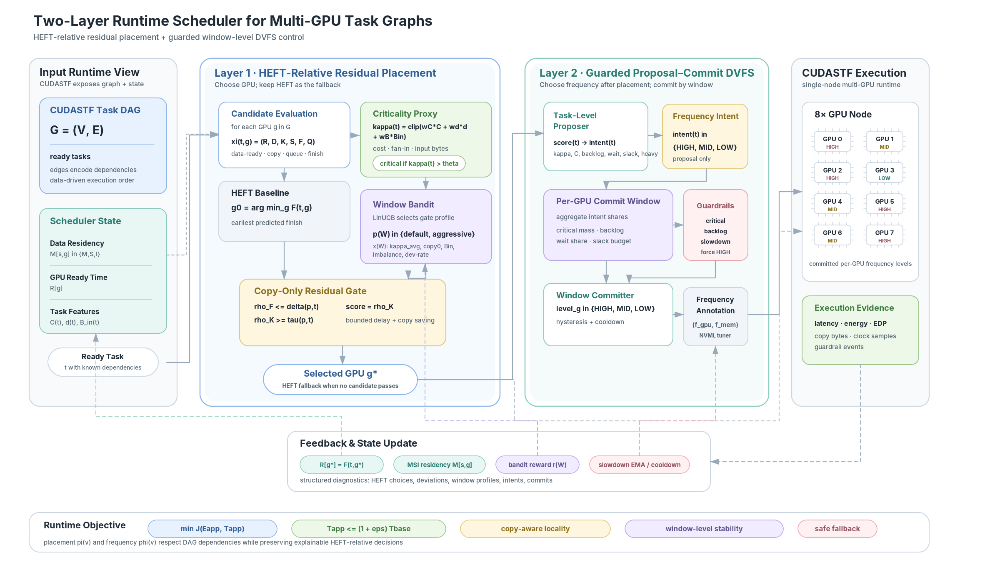
Layer 1 chooses the GPU
Candidate GPUs are evaluated against HEFT; non-HEFT choices require copy-saving evidence.
Layer 2 chooses the frequency
Frequency intent is generated after placement and committed by per-GPU windows.
Feedback closes the loop
The scheduler records deviations, rewards, commits, and guardrails for attribution.
Chapter 3 - Method contract
Every online decision has evidence, a threshold, and a conservative fallback.
| Decision point | Evidence used | Default action if evidence is weak |
|---|---|---|
| Criticality proxy | Task cost, dependency count, and input bytes are normalized and combined into q(t). | Treat high-q tasks conservatively. |
| Placement | Compare every GPU to the HEFT baseline using finish-time penalty and copy-gain evidence. | Use HEFT GPU g0. |
| Bandit profile | LinUCB scores default vs aggressive residual-gate profiles from completed-window context. | Use the default gate when aggressive evidence is not strong enough. |
| DVFS intent | Per-task criticality, backlog, copy-wait ratio, slack, cost, and heavy-kernel flags. | Vote HIGH. |
| DVFS commit | Per-GPU window vote shares, critical mass, urgent-heavy mass, backlog, slack budget, and slowdown history. | Commit HIGH or recover to HIGH. |
This part keeps placement in one continuous story: the runtime model, HEFT timing baseline, bounded residual gate, and LinUCB profile selection.
Chapter 2 - Runtime model
CUDASTF gives the scheduler more than a stream of kernels.
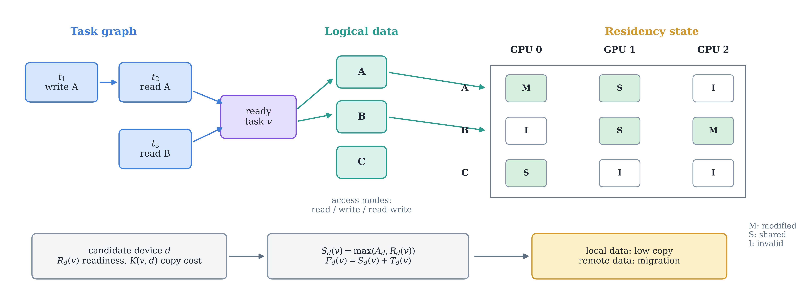
Dependencies
The runtime knows which tasks must wait for previous reads and writes.
Residency
It also tracks which GPU already owns or shares a logical data object.
Scheduling opportunity
That makes data movement, queueing, and slack visible at scheduling time.
Chapter 2 - Timing model
HEFT predicts the earliest finish time of each ready task on each GPU.
F(t,g) = S(t,g) + C(t,g)
Terms
R(g) is the GPU ready time, D(t,g) is the data-ready time after dependencies and required copies, C(t,g) is the predicted task cost, and F(t,g) is the predicted finish time.
Chapter 2 - Residual placement theory
A non-HEFT placement is accepted only when delay is bounded and copy saving is large enough.
ρF(t,g) ≤ δ(p,t) and ρK(t,g) ≥ τ(p,t)
Chapter 3 - Residual placement gate
The residual gate turns locality into an explicit acceptance test.
ρF ≤ δ(p,t) and ρK ≥ τ(p,t)
How to read the rule
- High-criticality tasks use tighter delay bounds.
- Non-critical tasks can spend slightly more local time to reduce future copy traffic.
- If no candidate passes, the scheduler falls back to HEFT.
Chapter 3 - Placement decision details
Placement accepts a non-HEFT GPU only with bounded delay and enough locality evidence.
| Profile | δcrit | δnoncrit | τcrit | τnoncrit |
|---|---|---|---|---|
| default | 0.003 | 0.015 | 0.25 | 0.15 |
| aggressive | 0.004 | 0.020 | 0.20 | 0.10 |
Fallback
If the feasible set is empty, or ties cannot be resolved by score, the scheduler returns to HEFT and uses deterministic GPU-id tie breaking.
Chapter 3 - Layer 1: placement
Every placement decision is expressed relative to HEFT.
Baseline
Evaluate all GPUs using data-ready time, copy time, queue delay, start time, and finish time.
Residual gate
Accept a non-baseline GPU only when the normalized finish-time penalty is bounded and the copy gain is large enough.
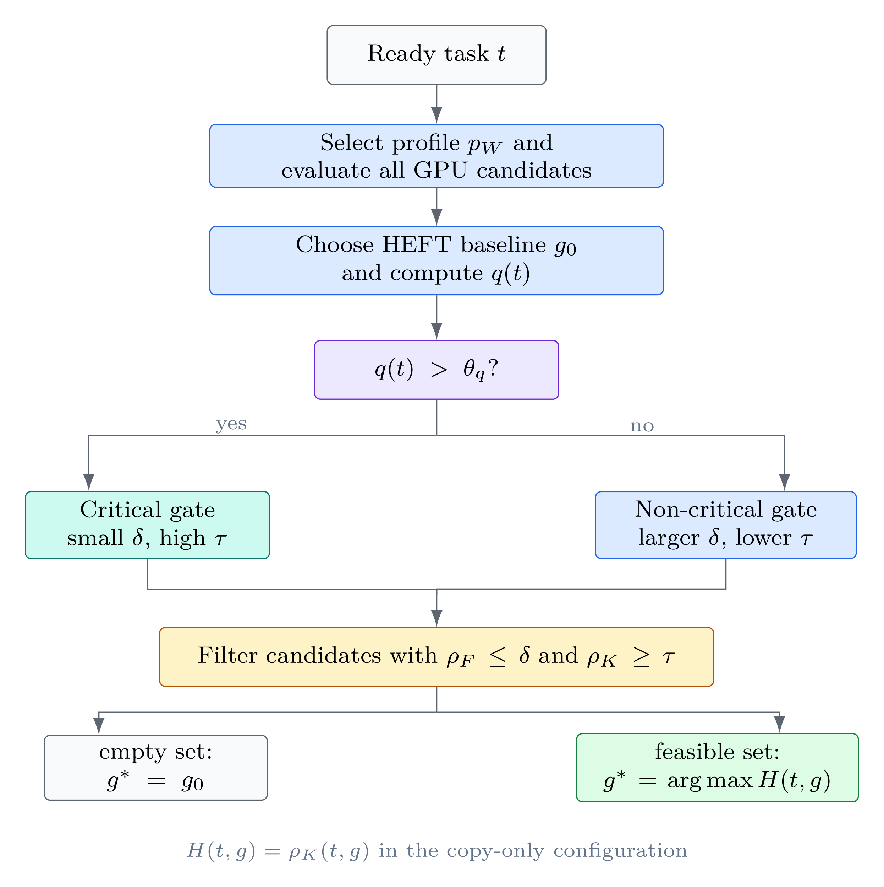
Chapter 2 - Bandit primer
A bandit is an online learner for repeated choices with partial feedback.
Arms
The available choices. In a classical bandit, each round selects one arm and observes only the outcome of that arm.
Context
Extra information before the choice. Here, the context summarizes the recent task-graph window.
Reward
The feedback signal after the choice. The learner should favor arms that receive higher reward in similar contexts.
Chapter 2 - UCB intuition
UCB chooses the arm with the highest optimistic reward estimate.
Exploitation
Prefer an arm whose observed reward has been high in previous rounds.
Exploration bonus
Add a larger bonus when the estimate is uncertain or the arm has been tried less often.
Optimism
Select the arm whose plausible upper bound is best, not only the current mean estimate.
Chapter 2 - LinUCB
LinUCB makes UCB context-dependent with a linear reward model.
Prediction
For each arm a, LinUCB learns a vector θa. Given context x, the predicted reward is θaTx.
Uncertainty
The confidence term is larger when the model has little evidence for similar contexts.
Update
After observing reward r, only the selected arm updates its model from the pair (x, r).
Chapter 2 - Bandit in this thesis
We use LinUCB to choose a residual-gate profile, not to choose the GPU directly.
Observe window
Criticality, copy pressure, input bytes, task cost, load imbalance, and recent deviation rate.
Score profiles
LinUCB scores the default and aggressive residual-gate profiles from the window context.
Apply next window
The selected profile changes the gate thresholds; the actual GPU choice remains HEFT-relative.
Why this action space is small
The bandit does not search over every GPU for every task. It only decides whether the residual gate should be conservative or more permissive for the next window.
Why this remains auditable
Every non-HEFT placement still has to pass the finish-time and copy-gain gate. If no candidate passes, the scheduler falls back to HEFT.
Chapter 3 - Window bandit
The bandit does not choose GPUs. It chooses how permissive the HEFT-relative gate should be.
Observe a window
Criticality, copy cost, input bytes, task cost, load imbalance, and recent deviation rate.
Select a profile
Choose default or aggressive gate thresholds for the next scheduling window.
Update by relative reward
Reward copy savings only when they beat the default profile under the same window.
Chapter 3 - Bandit implementation details
The bandit tunes gate aggressiveness at window granularity, not task granularity.
Context vector
Average criticality, high-criticality fraction, baseline copy time, input bytes, dependency count, task cost, load imbalance, and recent deviation rate.
Reward basis
Reward increases with copy gain and decreases with criticality-weighted finish penalty and deviation rate.
Chapter 3 - Bandit rationale
Different task-graph phases need different amounts of residual aggressiveness.
Fixed thresholds are brittle
A conservative gate protects latency but can miss copy-saving opportunities. An aggressive gate finds more locality but risks unnecessary deviation.
Window-level adaptation is stable
The controller observes a completed window, selects a gate profile for the next window, and updates only the selected profile from relative reward.
This part explains the energy-performance objective, why per-task DVFS is unstable, and how proposer votes, per-GPU windows, and guardrails produce conservative frequency commits.
Chapter 2 - Optimization objective
The framework treats energy saving as a constrained latency trade-off.
subject to T ≤ (1 + ε) Tbase
Practical approximation
Placement reduces unnecessary data movement, while DVFS lowers power only when the window-level guardrails keep the latency risk acceptable.
Chapter 3 - DVFS motivation
Frequency control must account for slack and transition cost, not only local power.
Per-task DVFS is too reactive
Changing clocks for every short task can spend the saving on transitions.
Phase-level DVFS is too coarse
A whole-application setting misses variation between task-graph regions.
Window-level DVFS is the compromise
Task-level intent is retained, but actual changes are amortized over a region.
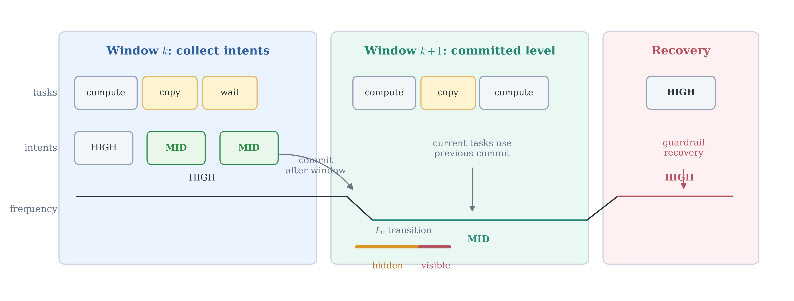
Chapter 3 - DVFS proposer details
The task-level proposer is intentionally conservative: many conditions vote HIGH.
| Intent | Decision basis | Representative defaults | Fallback |
|---|---|---|---|
| Force HIGH | Critical task, urgent-heavy task, strict-heavy cost, or high backlog. | criticality force-high 0.90; backlog force-high 0.80; strict-heavy cost 1.0 ms. | HIGH |
| Allow MID | Enough copy-wait time, low enough criticality, acceptable backlog, and no urgent-heavy risk. | wait ratio 0.25; criticality limit 0.45; backlog limit 0.60. | HIGH if any condition fails. |
| Allow LOW | Only for low-criticality, slack-rich, wait-bound, light tasks, and only when LOW is globally enabled. | criticality 0.25; slack 0.50; wait ratio 0.40; task cost at most 0.25 ms. | MID or HIGH. |
Chapter 3 - Layer 2: DVFS
Frequency control is delayed and guarded to avoid unstable per-task switching.
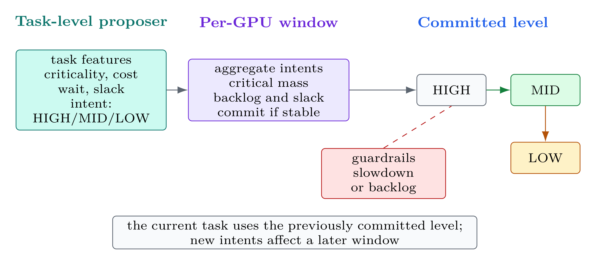
Task-level proposer
Each scheduled task votes for HIGH, MID, or LOW using criticality, cost, wait, slack, and backlog.
Per-GPU committer
Votes are accumulated in a window; lower frequency requires stable evidence.
Guardrails
Critical mass, backlog, or recent slowdown can force recovery to HIGH.
Chapter 3 - DVFS committer and guardrails
Frequency changes require stable per-GPU window evidence and can always recover to HIGH.
| Parameter | Default | Role |
|---|---|---|
| DVFS window size | 16 intents | Amortize transitions over a device window. |
| MID wait share | 0.25 | Minimum communication/wait evidence. |
| MID critical mass | 0.45 | Do not lower frequency on critical windows. |
| MID consecutive windows | 2 | Prevent one-window oscillation. |
| LOW consecutive windows | 3 | Require stronger stability for LOW. |
Force-HIGH guardrails
Recovery is triggered by urgent-heavy mass, criticality mass, high backlog, active cooldown, or recent measured slowdown.
Slowdown guardrail
Runtime slowdown above 2% or busy-tail slowdown above 3% is tracked over 4 recent windows; 2 indicators force recovery.
Chapter 3 - Design discipline
Placement and DVFS are separated so the evidence remains interpretable.
Placement asks where
Which GPU should execute the task, given data residency and finish-time risk?
DVFS asks how fast
Given the selected GPU, can the next window lower frequency safely?
Evaluation follows the split
First show placement latency and locality; then show DVFS energy and EDP.
The results first introduce the setup, then evaluate placement, DVFS, and the combined end-to-end scheduler before discussing overhead and claim boundaries.
Chapter 4 - Evaluation setup
Experiments isolate placement, DVFS, and end-to-end behavior.
Platform
Single Slurm node with 8 NVIDIA L4 GPUs, CUDA 12.4.1, Release build, NVML power sampling.
Benchmarks
FDTD, CG, MiniWeather, Cholesky, and LU decomposition.
Metrics
Latency, energy, power, copy bytes, and EDP over the timed benchmark execution window.
| Comparison | Baseline | What it answers |
|---|---|---|
| Placement | HEFT, no DVFS | Does residual placement improve latency? |
| DVFS | Bandit no-DVFS | Does frequency control reduce energy without large slowdown? |
| End-to-end | HEFT | What does the full runtime achieve? |
Chapter 4 - Benchmark mix
The benchmark suite is useful because it contains both copy-sensitive and near-neutral cases.
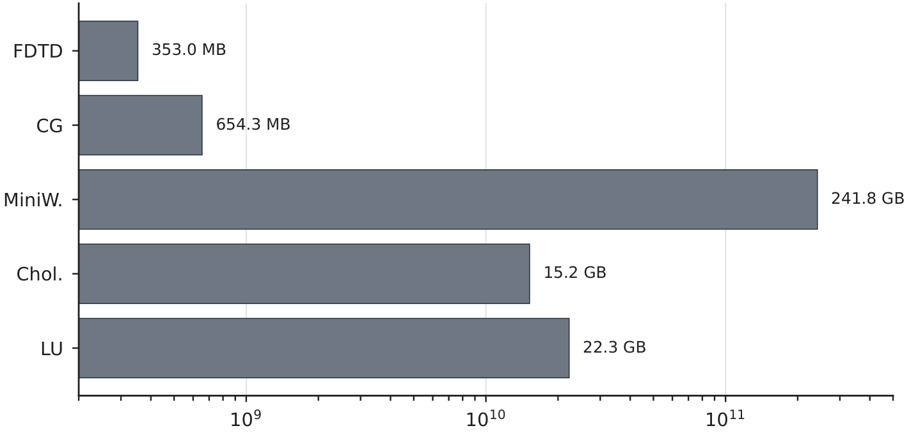
Why this matters
- Large raw copy volume does not automatically mean reducible copy traffic.
- Linear algebra workloads expose strong placement opportunities.
- MiniWeather is valuable as a control: high copy volume, but little residual-placement opportunity.
- The evaluation should therefore report per-benchmark behavior, not only one aggregate number.
Chapter 4 - Evidence chain
Each result section answers a different examiner question.
| Question | Evidence used in the thesis | What would count as failure? |
|---|---|---|
| Does placement help? | HEFT vs Bandit latency with DVFS disabled | Latency gains only appear when DVFS is also changed |
| Why does placement help? | Copy-byte reduction and local Cholesky copy footprint | Latency improves without any locality evidence |
| Does DVFS save energy? | Bandit no-DVFS vs Bandit+WinDVFS energy and EDP | Power drops but EDP worsens due to slowdown |
| Is the full system useful? | HEFT vs Bandit+WinDVFS end-to-end comparison | Component gains disappear when combined |
| Is the scheduler overhead plausible? | Dynamic Bandit vs static replay diagnostic | Online control cost is comparable to the measured gain |
Chapter 4 - Placement result
Locality-aware placement is strongest on copy-sensitive task graphs.
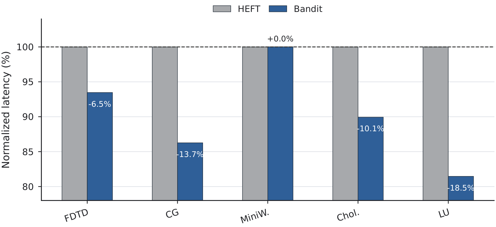
| Benchmark | Latency Δ |
|---|---|
| FDTD | −6.530% |
| CG | −13.733% |
| MiniWeather | +0.019% |
| Cholesky | −10.063% |
| LU decomposition | −18.539% |
Geometric mean speedup: 1.110971×.
Chapter 4 - Placement interpretation
The scheduler behaves differently depending on the available locality opportunity.
Strong wins
CG, Cholesky, and LU decomposition expose useful non-HEFT placements and dominate the geometric mean.
Moderate win
FDTD improves, but it is treated as a moderate case rather than the main proof point.
Near-neutral control
MiniWeather remains essentially at HEFT latency, which is the desired behavior when the residual gate finds no useful alternative.
Chapter 4 - Locality evidence
The strongest latency gains coincide with reduced copy traffic.
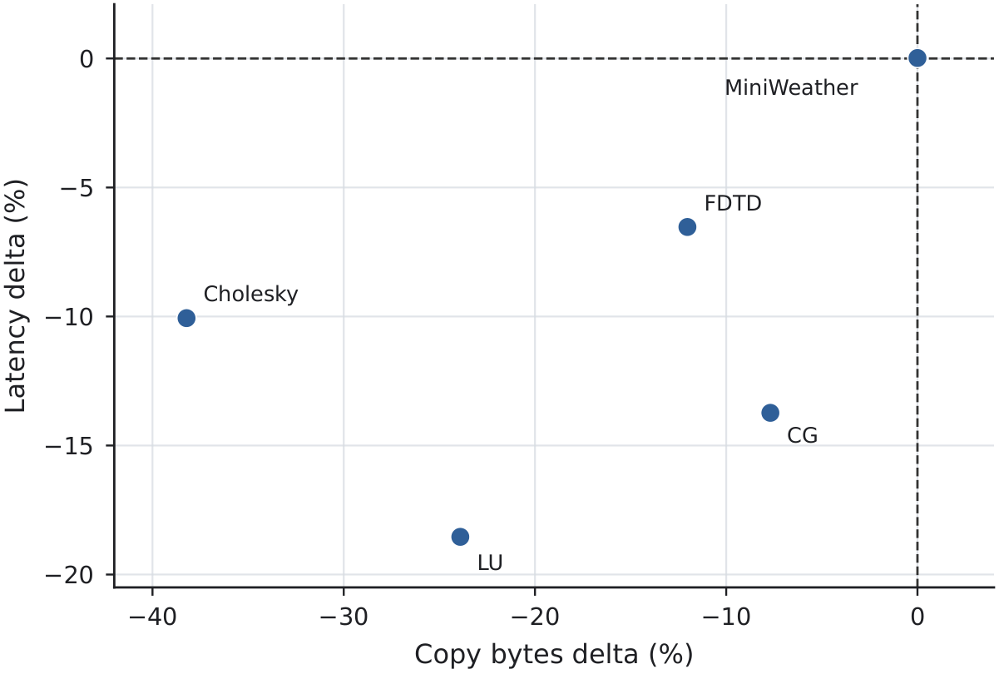
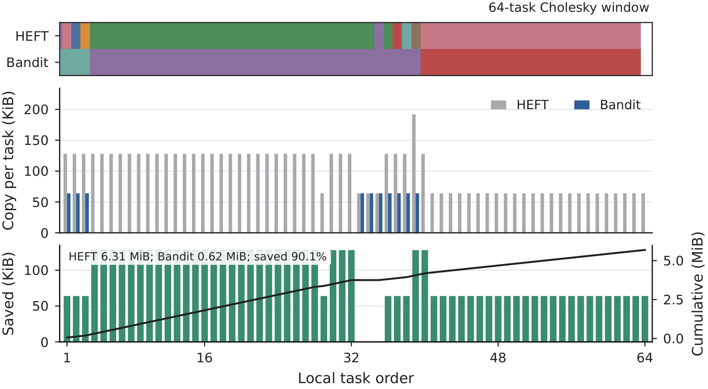
Chapter 4 - Locality interpretation
Copy traffic is used as mechanism evidence, not as a replacement for runtime measurement.
What it supports
- The scheduler is exploiting data residency rather than randomly changing GPU assignments.
- Large placement wins are consistent with reduced data movement.
- Neutral workloads remain close to HEFT when copy traffic is not reduced.
What it does not claim
- It does not prove every millisecond of latency change comes from copy traffic.
- It does not make placement universally beneficial for all task graphs.
- It does not replace the latency comparison as the primary performance result.
Chapter 4 - DVFS result
WinDVFS reduces energy with less than one percent geometric-mean latency overhead.
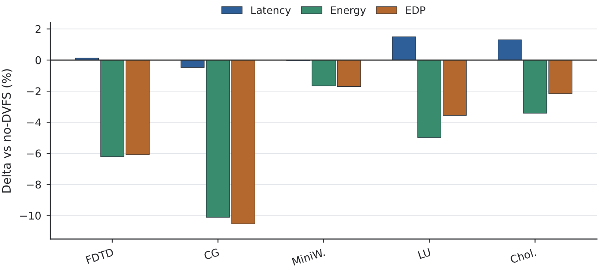
| Benchmark | Latency | Energy | EDP |
|---|---|---|---|
| FDTD | +0.13% | −6.21% | −6.09% |
| CG | −0.47% | −10.11% | −10.53% |
| MiniWeather | −0.05% | −1.66% | −1.70% |
| LU | +1.50% | −4.98% | −3.56% |
| Cholesky | +1.30% | −3.42% | −2.16% |
Chapter 4 - DVFS interpretation
The relevant question is not whether power drops, but whether energy still improves after runtime is included.
Interpretation rule
A DVFS row is useful only when the power reduction is not erased by extra latency. This is why the table reports latency, energy, and EDP together.
- Negative energy delta alone is not enough.
- EDP below 1.0 means the energy saving survives the runtime term.
- Small latency overheads are acceptable only when energy falls more strongly.
Chapter 4 - Energy-performance trade-off
The DVFS claim is deliberately modest: energy and EDP improve, but the benefit is workload-dependent.
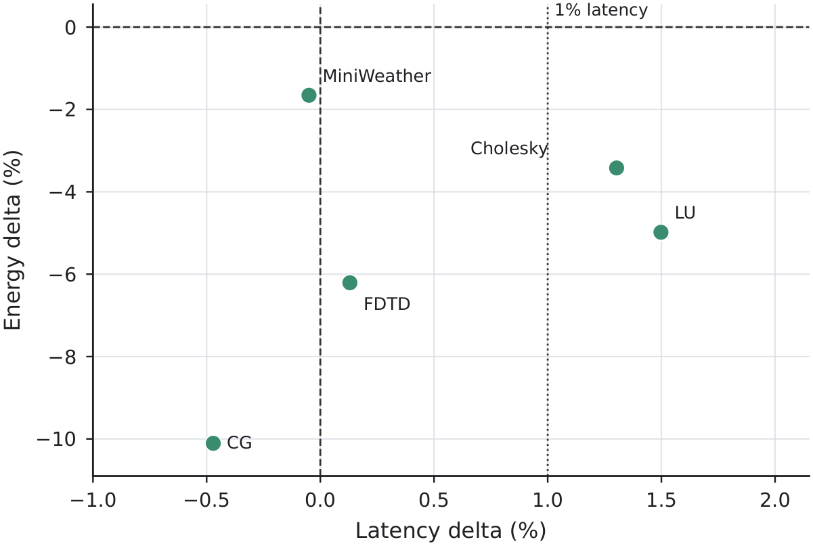
Interpretation
- CG is the strongest case: energy decreases while latency slightly improves.
- LU and Cholesky accept small latency overheads but still improve EDP.
- MiniWeather shows near-neutral latency with a smaller energy gain.
Chapter 4 - End-to-end comparison
Against HEFT, the complete Bandit+WinDVFS system improves all three headline metrics.
Latency
geometric-mean reduction.
Energy
geometric-mean reduction.
EDP
geometric-mean reduction.
| Benchmark | Latency Δ | Energy Δ | EDP Δ |
|---|---|---|---|
| FDTD | −5.56% | −8.36% | −13.45% |
| CG | −13.48% | −20.13% | −30.89% |
| MiniWeather | +0.05% | −4.04% | −3.99% |
| LU decomposition | −15.14% | −20.37% | −32.42% |
| Cholesky | −9.04% | −4.98% | −13.56% |
Chapter 4 - End-to-end interpretation
The combined result is not one uniform effect; different benchmarks benefit for different reasons.
Placement-dominant cases
LU decomposition, CG, and Cholesky receive large latency benefits from locality-aware placement. DVFS then adds an energy layer on top of that placement.
Energy-dominant or neutral cases
FDTD combines moderate placement improvement with a larger DVFS energy reduction. MiniWeather remains almost latency-neutral but still reduces energy and EDP.
Chapter 4 - Headline results
The full system improves latency, energy, and EDP relative to HEFT.
Placement only
geometric-mean latency reduction vs HEFT with DVFS disabled.
WinDVFS only
geometric-mean energy reduction under fixed Bandit placement.
End to end
geometric-mean EDP reduction vs HEFT.
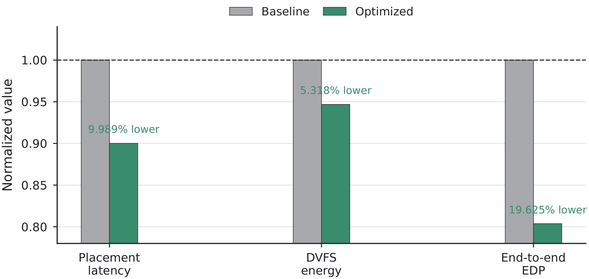
Chapter 4 - Overhead and boundaries
The online Bandit decision path is small at benchmark scale, but the claim remains scoped.
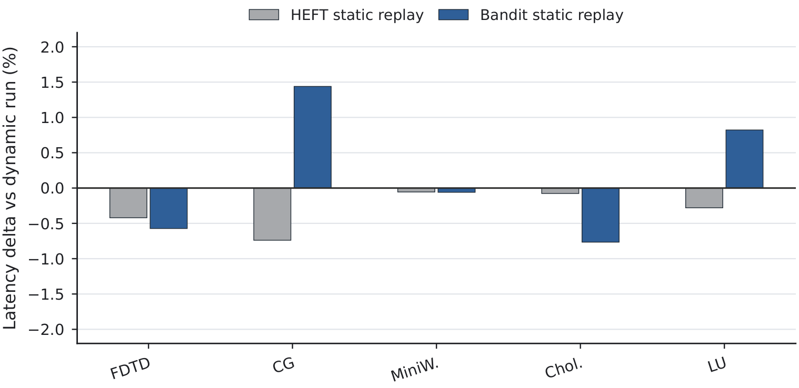
Overhead diagnostic
Dynamic Bandit and static replay differ by only -0.766% to +1.439% in latency, with +0.169% geometric mean.
Claim boundaries
Single eight-GPU L4 node, five benchmarks, benchmark-window energy, and lightweight runtime models.
The final part turns the results into a defended claim: what the thesis proves, what it deliberately does not claim, and what should be built next.
Chapter 5 - Discussion
The main contribution is not a black-box scheduler; it is a bounded decision framework.
Placement
Geometric-mean placement speedup with DVFS disabled. The strongest cases coincide with reduced data movement.
DVFS
Geometric-mean latency overhead in the DVFS comparison, while energy and EDP decrease on the evaluated workloads.
End to end
EDP reduction against HEFT when placement and WinDVFS are combined under the final evaluation setup.
Chapter 6 - Limitations
Scope of the evaluation.
Platform
Eight NVIDIA L4 GPUs on a single node. The results should be revalidated on other architectures.
Benchmarks
The suite covers useful locality patterns, but it is not a complete application universe.
Energy metric
The energy claim concerns the measured execution window, not whole-system facility energy.
Chapter 6 - Future work
The next step is to make the framework broader, more adaptive, and easier to deploy.
Broader validation
Repeat the evaluation across more GPU generations, larger nodes, and longer application traces to test portability.
Concrete next step: add another GPU architecture and a longer application-level workflow.
Richer DVFS models
Use online power, temperature, and slack signals to make frequency selection less static and more workload-aware.
Concrete next step: score a window by predicted energy saving under a visible-latency budget.
Production integration
Reduce diagnostic overhead, simplify configuration, and expose policy summaries that runtime users can inspect.
Concrete next step: keep low-overhead logs for final runs and move detailed traces to debug mode.
Chapter 7 - Conclusion
A multi-objective scheduler does not need to choose between performance, energy, and interpretability.
By anchoring placement to HEFT, using LinUCB only to tune gate aggressiveness, and committing DVFS by guarded windows, the framework improves the measured energy-performance trade-off while keeping every decision auditable.
Final takeaway
- Placement is the strongest and clearest result.
- DVFS is useful when treated as a guarded trade-off.
- The combined scheduler improves latency, energy, and EDP in the evaluated setting.
- The main design principle is bounded adaptation, not unconstrained learning.